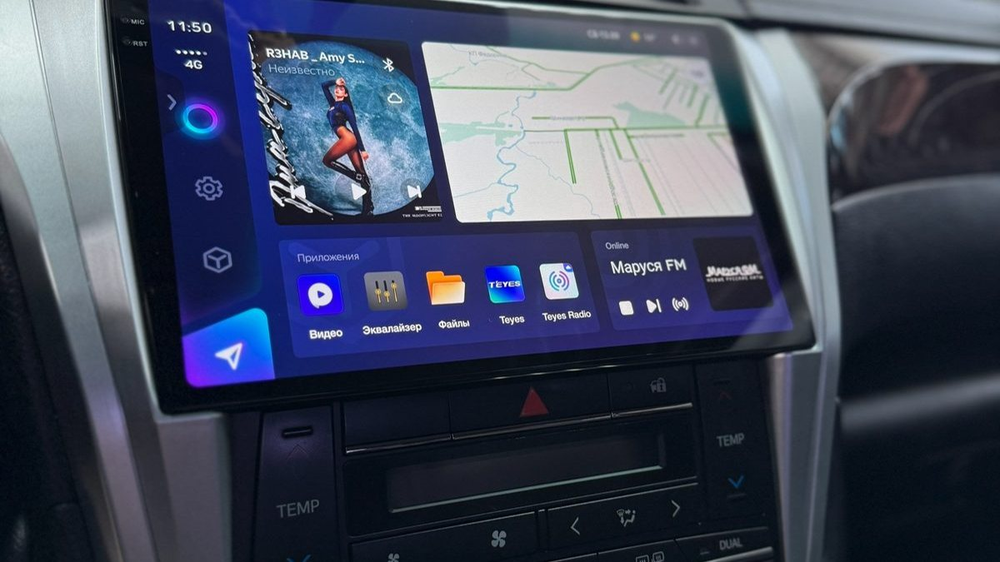

Выбирая автозапуск с брелка или с телефона, вы на самом деле выбираете под место, где ночует ваша машина. Посмотрите утром в окно – и половина ответа готова.
Вечер, вы приехали поздно, все места под окнами заняты. Машина встаёт за соседним домом, у гаражей. Утром вы стоите на кухне в Заволжье, жмёте кнопку брелка в сторону окна и не знаете, завелась она или нет. Брелок молчит. Вы одеваетесь, идёте проверять – и машина стоит холодная. Сигнал просто не добил через стены двух панельных домов.

Брелок общается с блоком сигнализации напрямую, по радио. Никакой сим-карты, никакого интернета: нажали кнопку, сигнал ушёл к машине. Брелок с обратной связью показывает, что машина ответила, и пищит, если её кто-то тронул.
Слабое место – дальность. На открытом месте она одна, а во дворе между бетонными стенами, на девятом этаже, через чужие машины и деревья – совсем другая. Чем больше на пути домов, тем меньше шансов, что сигнал дойдёт. И брелок можно забыть дома, разрядить в кармане на морозе или потерять в сугробе.
Для управления с телефона в машине стоит модуль с сим-картой. Вы открываете приложение, нажимаете «запуск», команда уходит через мобильную сеть. Расстояние не важно: машина может стоять за домом, у работы или на другом берегу Волги. Если в месте стоянки есть связь, команда дойдёт.
Приложение показывает больше, чем брелок: температуру в салоне, заряд аккумулятора, где стоит машина. Последнее особенно приятно, если она ночует не на виду.
Минусы тоже есть. Сим-карту в модуле нужно вовремя пополнять, об этом придётся помнить. В подземном паркинге или в гаражном кооперативе связь бывает слабой, и тогда телефон бессилен. А телефон на морозе разряжается быстрее, чем хочется.
И ещё одна деталь, о которой вспоминают поздно. Приложение – это не только запуск. Если ночью кто-то тронет машину, тревога придёт на телефон, который лежит у кровати, а не на брелок, оставленный в куртке в прихожей. Для машины, которая стоит вне поля зрения, это иногда важнее тёплого салона.

Машина под окном, вы её видите. Брелка с обратной связью обычно хватает. Он заведёт, покажет результат и разбудит, если что-то случится ночью.
Машина за домом или на соседней улице. Здесь брелок начинает ошибаться, и спокойнее с телефоном. Вы точно знаете, завелась она или нет, и видите, где она стоит.
Машина ночует в разных местах. Дома, у работы, у родителей на выходных – тут телефон выигрывает без споров. Дальность брелка в каждом месте своя, а мобильная сеть почти везде одна.
Самый частый выбор – не «или», а «и». Многие сигнализации умеют работать и с брелоком, и с телефоном одновременно. Брелок – на каждый день, когда машина рядом. Телефон – когда далеко и когда нужно знать, что с ней происходит.
Встаньте утром у окна и честно ответьте: где обычно стоит ваша машина, видно ли её, есть ли там связь. Запишите марку, модель, год и куда вы ставите машину на ночь. С этим разговор с мастером будет предметным: он скажет, хватит ли брелка или нужен модуль для телефона.
Мы в Ярославле – студия «Автостиль», проспект Октября, 82б. Ставим сигнализации с автозапуском, с управлением через приложение и отслеживанием местоположения, а после установки остаёмся на связи, если появятся вопросы. Подробнее – на странице про охранные системы. Телефон: +7 902 220-75-55.